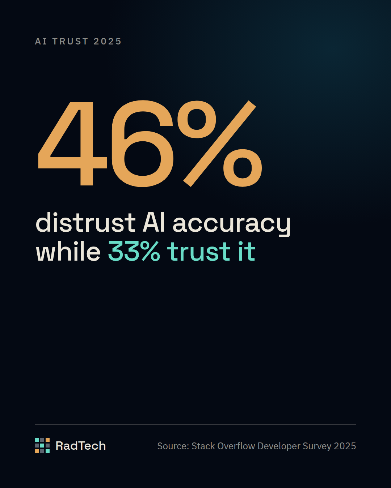

Deciding What to Omit in the First AI Assisted Release
You will learn how to turn interview notes into user stories, rank features into must-have and later groups, and validate a clickable prototype before…

You will learn how to turn interview notes into user stories, rank features into must-have and later groups, and validate a clickable prototype before any backend is written. The focus is on the strategic choices that keep the first version lean and trustworthy.
Developer trust is not a given
The Stack Overflow Developer Survey 2025 reports that more developers distrust the accuracy of AI tools (46%) than trust it (33%). That gap means teams cannot rely on AI output alone when deciding what to ship. Start by treating AI-generated code as a draft rather than a final product. Verify each suggestion against the product vision and the known constraints of the domain. Keep a short log of mismatches; patterns often reveal where AI is weak, such as handling edge cases or interpreting ambiguous requirements. Teams that skip this verification tend to ship bugs that erode user confidence early. By building a habit of manual review, you preserve the speed advantage of AI while protecting the quality of the first release.
Turn interview notes into user stories
Interview notes are raw material; they need to be reshaped into clear, testable user stories. Begin by extracting the core intent from each note: what does the user want to achieve, and why. Write each story using the three parts of role, action, and benefit, and attach concrete acceptance criteria that describe observable outcomes. When AI suggests a story, compare it with the original note to ensure no nuance is lost. A common pitfall is accepting AI-written stories that sound complete but miss critical constraints mentioned by the interviewee. After drafting, run a quick review with the stakeholder who provided the notes; a brief confirmation call can catch gaps before the backlog is frozen.
Sort features into must have and later
Prioritisation determines the scope of the first version. Use a two-column approach: one for must-have items that deliver the core value, another for later items that enhance the experience but are not required for launch. Follow these steps:
- List every feature that emerged from the user stories.
- Ask the product owner to mark each as essential for the core promise or optional for future improvement.
- Validate the must-have list against the project timeline and the resources that will be allocated to AI-generated code.
If a feature depends on a complex backend that AI cannot reliably produce, consider moving it to the later column. Skipping this validation often leads to a first version that stalls during development because critical pieces cannot be completed on schedule.
Create a clickable prototype before any backend exists
A clickable prototype lets you test the flow with real users while the backend is still in flux. Build the prototype using a design tool that supports interactive linking, and keep the visual design simple to focus on the user flow. Conduct a brief usability test with a small group of target users; observe where they hesitate or encounter dead ends. Collect feedback and iterate on the prototype before any code is written. Teams that skip this step often discover missing screens or confusing flows only after the backend is built, which makes changes costly. By confirming the experience early, you give AI-generated code a clear target and reduce rework.
What to do next
Take the interview notes from your last discovery session, turn them into user stories, rank the resulting features into must-have and later, and build a clickable prototype that reflects the must-have flow. Validate each step with stakeholders and a small user test before handing the work to AI for code generation. This disciplined approach lets you benefit from AI's speed while keeping the first release focused on the value that matters most. We scope and build the first version, then the next.
// Sources
- 2025 Developer Survey, AI section · Stack Overflow